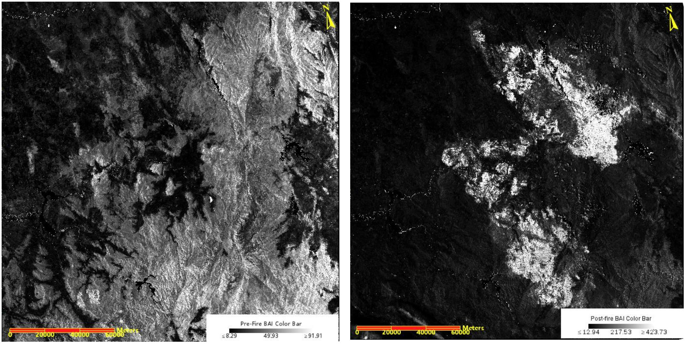
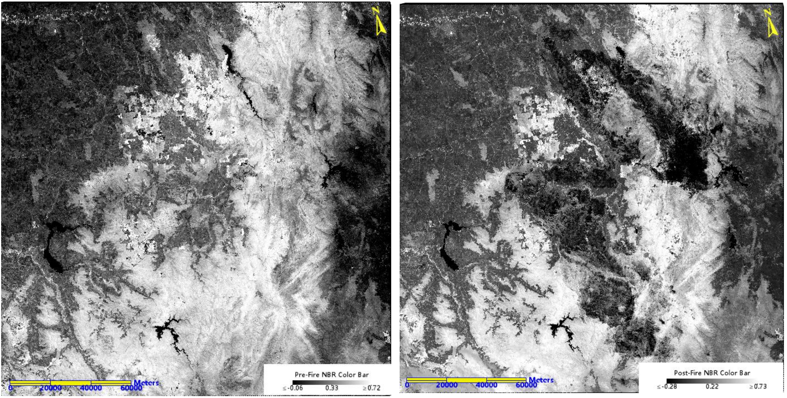
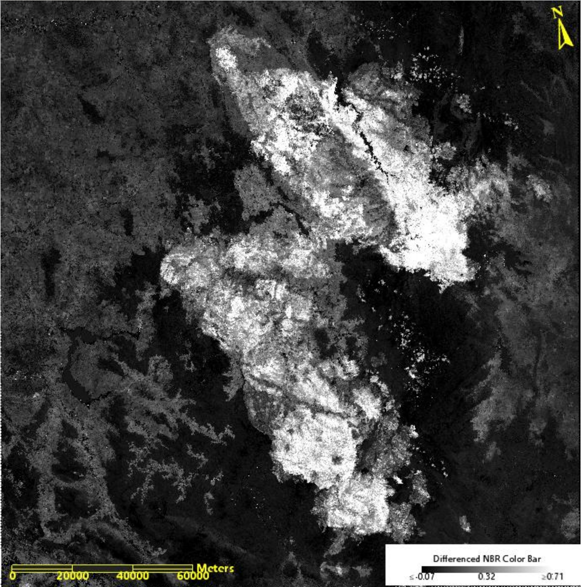

4 week 4 - policy
4.1 Overview - Assessing Burn Scars After Bushfire in Sydney
Do you remember the 2019–20 bushfires in Sydney? You and I were both in Melbourne at the time, and we were also affected
I do.It was a tragedy. Those people, animals, and plants that lost their lives in that fire- R.I.P.. Today, let’s explore the application of remote sensing technology in assessing burn scars after bushfire, in conjunction with relevant policies.
In today’s world, remote sensing technology has become an important tool for detecting and managing urban challenges, building a bridge between scientific research and policy development.
Bush Fire is one of the most commonly occurring natural disasters in Australia which brings huge damage to the land and requires a relatively long recovery period. Sydney, surrounded by vast tracts of bushland, is inherently vulnerable to the threat of bushfires, which have become more frequent and intense due to climate change and urban encroachment into forested areas. However, considering the scale of the bushfire and human ability, it is hard to examine the post-fire condition manually. Hence Landsat satellites are constantly being used to capture and analyze spatial information on large scales, such as detecting physically affected regions after fire, predicting the potential hazards, generate vegetation regrowth.
The significance of post-wildfire assessments in Australia, particularly regarding the evaluation of burn scars, is underscored by the “National Bushfire Management Policy Statement for Forests and Rangelands” (2014). “Planning for Bush Fire Protection 2019” further complements this approach by providing detailed guidelines for post-bushfire planning.
By assessing the burn scars left by bushfires, we can gain a better understanding of the environmental impact of fires and provide critical information for rebuilding and restoration efforts, which is significant for achieving the United Nations Sustainable Development Goals.
Goal 13: Climate Action - Monitoring and assessing the aftermath of fires can improve our understanding of how climate change affects the frequency and intensity of wildfires, leading to better adaptation and mitigation strategies.
Goal 15: Life on Land - Evaluating the extent of ecosystem damage through burn scar assessments helps in taking appropriate restoration and conservation measures, protecting terrestrial ecosystems and biodiversity.
Goal 11: Sustainable Cities and Communities - Assessing burn scars is also related to reducing disaster risk and enhancing disaster response capabilities (such as to wildfires), crucial for protecting human settlements and ensuring the sustainability of cities and communities.
4.2 Applications
The importance of accurately assessing burn scars extends beyond ecological concerns; it directly influences post-disaster reconstruction and mitigation strategies. By understanding the severity of wildfires and the specific areas most affected, policymakers and urban planners can prioritize rehabilitation efforts, allocate resources more efficiently, and implement land management practices aimed at reducing the risk of future fires. Furthermore, the integration of fire severity patterns with vegetation type data can improve the accuracy of fire intensity inferences, aiding in the refinement of fire management policies and practices.
Next, I will practice examining the burn severity and scars of the bushfire that took place in Kosciusko National Park, New South Wales between the end of 2019 and the beginning of 2020 through a range of applications using Landsat 8 datasets. This will be more helpful to your understanding of burn scar evaluation and related policy formulation.
Last week we talked about NDVI, Today we explore another index. The Burn Area Index (BAI) is an important element for analyzing burn scars, which uses the reflectance values in the red and NIR (Near Infrared) portion of the spectrum to identify the areas of the terrain affected by fire(Mashhadi & Alganci, 2021).

In above images, the white pixels indicate the area that has been burned, while the darker pixels indicate the presence of healthy vegetation.
For other visualization, Normalized Burn Ratio Images show below:

NBR is determined by utilizing wavelengths in the near infrared and shortwave infrared spectrum. The presence of a burnt area is indicated by a higher nominalized burn ratio, as burnt vegetation exhibits a lower near infrared reflectance and a higher shortwave infrared wavelength. In contrast, healthy vegetation displays the opposite characteristics. Therefore, the darker region with a low NBR value indicates the burnt area.
Next, By utilizing the Float(b2-b1) function, where b2 represents the NBR image before the fire and b1 represents the NBR image after the fire, I calculated the difference between the pre and post fire NBR images. The image highlights burnt areas, which are represented by white pixels. The severity of burn scars is indicated by the higher clarity and brightness of the white pixels.

Finally, I created a burn severity map. Using the U.S. Geological Survey’s FIREMON program’s burn severity categories as a guide, creating seven levels of severity in order to visually represent them.

Based on the map above, it provides better visualisation to assess the burn scars, relevant policymakers such as the NSW Government and the Department of Planning and Environment can more accurately deploy post-disaster policies. Potential policies may be as follows:
Reconstruction and Recovery Policy: Based on the severity maps of forest burn scars, the government can develop specific forest restoration plans, including reforestation and ecosystem rebuilding, to facilitate the natural recovery of damaged areas.
Prevention and Disaster Mitigation Policy: Utilizing burn scar severity maps to identify high-risk areas, the government can implement preventive measures in these areas, such as establishing firebreaks and enhancing monitoring and early warning system capabilities.
Land Use and Planning Policy: Based on the distribution and severity of burned areas, land use planning can be adjusted to limit development in high-risk areas and protect areas of flammable vegetation from being disturbed.
Funding Allocation and Resource Distribution Policy: Resources and funding should be prioritized for areas most severely affected by burns, as indicated by the burn scar severity maps, to support emergency response, recovery, and prevention efforts.
4.3 Literature Review and Reflection
The increasing emphasis on sustainability in all facets of urban development and management has encouraged the use and progress of remote sensing technology in city-related applications. However, the integration among remote sensing, ecology, and urban planning disciplines remains limited, with only 12% of the studies achieving a comprehensive integration of knowledge across these three fields(Wellmann et al., 2020). Most research primarily aims to expand the knowledge base or monitor the impact of existing policies, with few studies directly related to policy, such as providing concrete recommendations or evaluations for planning issues. Therefore, in the future, overcoming information barriers, the necessity of interdisciplinary integration, and enhancing the application of remote sensing knowledge throughout the policy cycle are critical considerations for policymakers and technologists(Kadhim, Mourshed & Bray, 2016).
My mini applications serves merely as a conceptual demonstration of assessing wildfire damage using remote sensing data and cannot act as a direct indicator for policy recommendations. In the real world, it is essential to consider a broader range of factors, such as economics, botany, and biology. This reflects the complexity of policy-making, indicating that any tech or Method can only assist in the process- the true wisdom lies in finding a balance among complex, interdisciplinary factors.
4.4 Refences
Gerasopoulos, E., Bailey, J., Athanasopoulou, E., Speyer, O., Kocman, D., Raudner, A., Tsouni, A., Kontoes, H., Johansson, C., Georgiadis, C., Matthias, V., Kussul, N., Aquilino, M., Paasonen, P., 2022. Earth observation: An integral part of a smart and sustainable city. Environmental Science & Policy, 132, pp.296-307.
Kadhim, N., Mourshed, M. and Bray, M., 2016. Advances in remote sensing applications for urban sustainability. Euro-Mediterranean Journal of Environmental Integration, 1, 7.
Mashhadi, N. and Alganci, U., 2021. Determination of forest burn scar and burn severity from free satellite images: a comparative evaluation of spectral indices and machine learning classifiers. International Journal of Environment and Geoinformatics, 8(4), pp.488-497. Available at: https://doi.org/10.30897/ijegeo.879669 [Accessed 4 February 2024].
NSW Rural Fire Service, 2019. Planning for Bush Fire Protection: A guide for councils, planners, fire authorities and developers. NSW Rural Fire Service, November. ISBN 978-0-646-99126-9.
Smith, R., 2016. Firebreak Location, Construction and Maintenance Guidelines. Fire and Emergency Services Authority of Western Australia, Perth. ISBN 978-0-9806116-6-3.
Wellmann, T., Lausch, A., Andersson, E., Knapp, S., Cortinovis, C., Jache, J., Scheuer, S., Kremer, P., Mascarenhas, A., Kraemer, R., Haase, A., Schug, F., Haase, D., 2020. Remote sensing in urban planning: Contributions towards ecologically sound policies? Landscape and Urban Planning, 204, 103921.